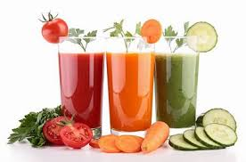

Asado a las brazas
21 de marzo 2019
El asado a la parrilla es no sólo un plato típico, sino la más emblemática de las especialidades tradicionales de la Argentina. En un quincho o al aire libre, el parrillero es parte del paisaje de los argentinos en muchísimos hogares. La construcción de un excelente tiraje cobra importancia a la hora de encender el fuego para que este rito, que es casi una religión, no se convierta en una nube de humo.
Para consolidarse como el más experto parrillero, hay que conocer el arte que se vislumbra detrás de todo buen asador, y la ciencia que se esconde tras lo cotidiano; no es sólo la amabilidad de un cálido anfitrión, ni siquiera es el resultado de un momento de inspiración. Un buen asado es la combinación de un conjunto de claves que quedaron selladas por la experiencia en una infinidad de reuniones familiares y celebraciones alrededor del fuego.
 Charly_M:Creo que el asado es lo mejor...
Charly_M:Creo que el asado es lo mejor...
 Fery_A:Quiero saber mas...
Frank:Pero que rico!!!
Fery_A:Quiero saber mas...
Frank:Pero que rico!!!
Jugos nutritivos de frutas
17 de marzo 2019
El verano es una de las épocas del año en donde las frutas y verduras se incorporan mucho más fácil a la dieta diaria. Ensalada de frutas, colaciones que se consumen entre comidas o jugos naturales en distintas versiones son algunas de las opciones más frecuentes para comer más liviano y saludable.
De esta manera, las infusiones, los smoothies y los licuados se transforman en los aliados infaltables de la temporada, ya que, además de incorporar vitaminas y minerales, son excelentes para hidratarse y recuperar energías. Lo más importante es saber cómo incorporarlos a la dieta diaria sin que falte ni sobre ningún ingrediente.
Ender:Voy a probar!!!